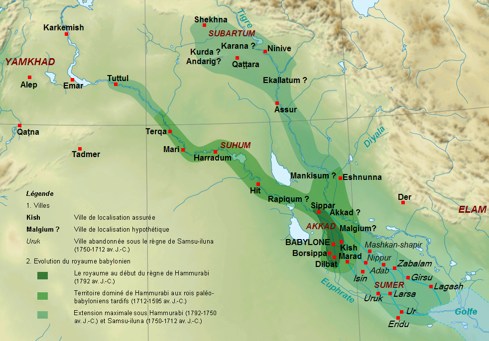
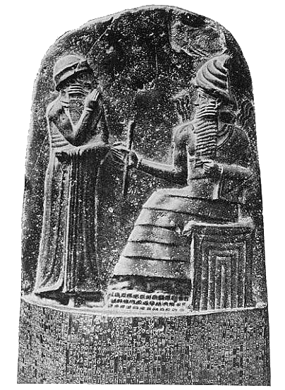
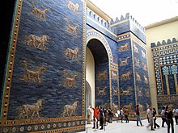

Babilónia
Babilónia volt a neve az ókor végén Dél-Mezopotámiának – a mai Irak középső és déli részének –, aminek az Óbabiloni Birodalom korától a hellénizmus idejéig Babilon volt a legjelentősebb városa, szellemi központja. Területe a Perzsa-öböltől az Eufrátesz és a Tigris alsó folyása mentén Máriig illetve Asszíriáig terjedt.

Babilónia királyai
Babilon ismert története sémi városállamként, amurrú dinasztia alatt kezdődött, virágkorát pedig az i. e. 19-18. században élte. Ekkor Babilon katonai és gazdasági erejével több mezopotámiai várossal is elismertette fennhatóságát. A városok kiválása az Óbabiloni Birodalomból már Hammurapi babiloni király halála után megkezdődött. i. e. 1594 körül a hettiták rombolták le, s ezután a városba már korábban betelepülő kassú dinasztiát az elámiak támadása buktatta meg, az elámiak elleni fegyveres küzdelmet viszont Iszin városából szervezték, így Babilon élére a II. iszini dinasztia került. Az i. e. 11-10. században az asszírok többször kiterjesztették hatalmukat a városra. Az asszírok elleni harcnak is köszönhetően az i. e. 7. század végén ismét jelentős hatalom lett (Újbabiloni Birodalom). i. e. 539-ben II. Kürosz perzsa király meghódította.

Művészet
Az újbabiloni képzőművészet csúcsa mindenképp maga Babilon városa volt, amelyet II. Nabú-kudurri-uszur békés, gazdag uralkodása alatt a világ egyik csodájává tett. Törekvése nem volt újszerű, hiszen már az asszír királyokra is jellemző volt, hogy fővárosukat a világ központjának tekintették, ennek megfelelően gazdagon díszítették palotákkal és templomokkal. A palotaépítés kevésbé volt jellemző a babiloni művészetre, de reprezentatív templomok itt is készültek. (Például a kortársak fantáziáját megragadó zikkurat, az Étemenanki, amelyet később Nagy Sándor bontatott le.)
